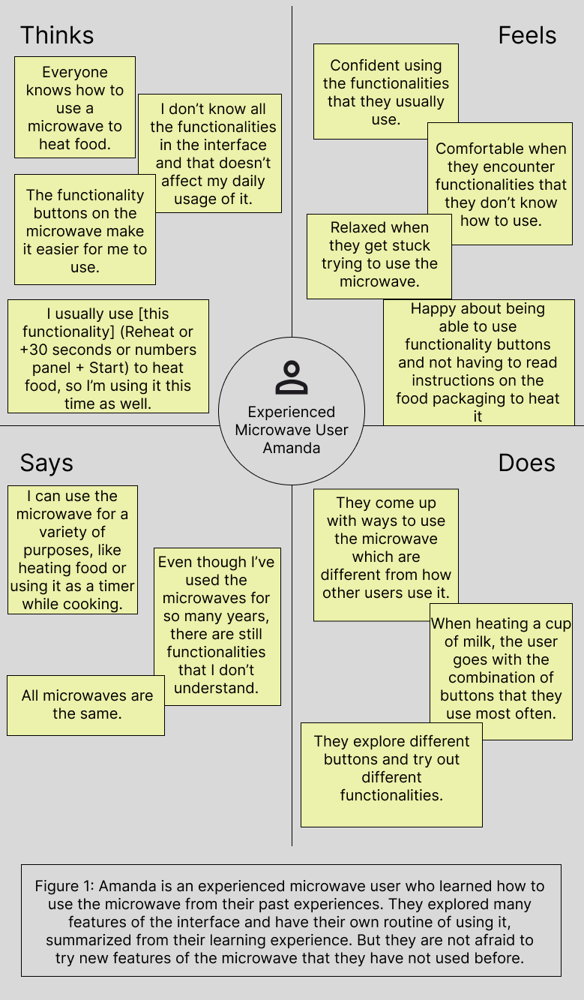
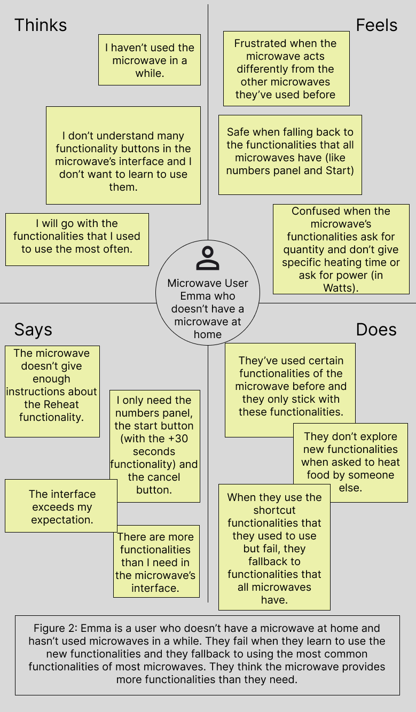
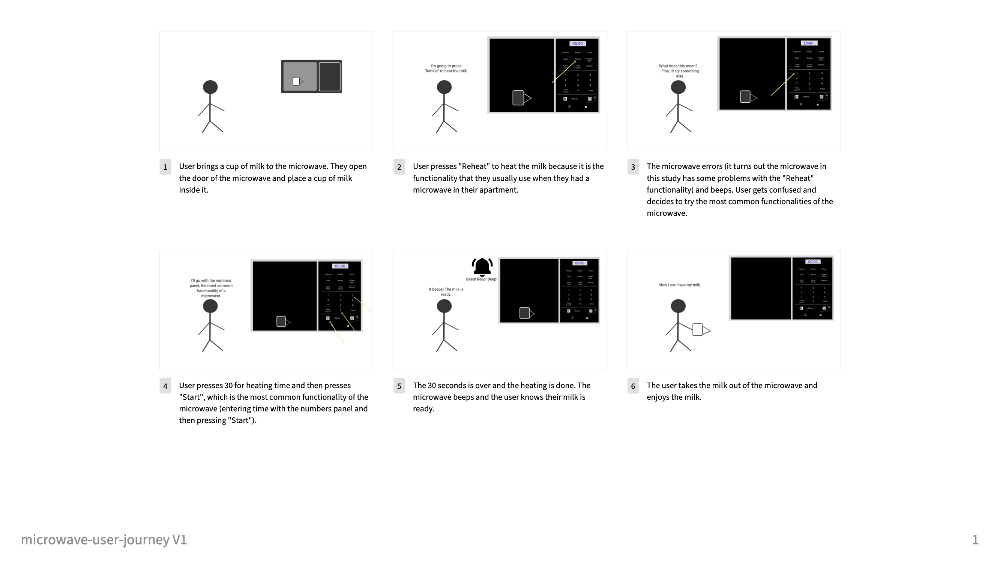

Personas and Storyboarding for the Interface of a Microwave
Shuyi Qi 2025/03
I observed the three users heating a cup of milk in a microwave and found out that user 1 and user 2 followed the following steps:
- The user uses the numbers panel to enter heating time.
- Then the user presses the start button, which starts heating a cup of milk in the microwave.
- After heating is over, the microwave beeps and the screen shows the word “End”. The user then takes the food out of the microwave.
User 3 eliminated step 1 and only followed steps 2 and 3 because pressing the start button once is a shortcut for heating for 30 seconds.
User 2 failed at the "Reheat" functionality multiple times before switching paths and going through steps 1-3.
After observing three users using the microwave, I interviewed the users with the following questions and
gathered their responses. The questions were designed to interview them about the interface rather than general
product design of the microwave. The questions are as follows:
- Do you find the interface easy to use?
-
User 1 and user 3 said that the interface was fine while user 2 listed a couple areas of improvement
in the microwave's interface. User 2 pointed out that not much instruction was given after pressing a specific functionality button.
She was not sure if the number on the screen meant power or time and when she was selecting a quantity,
the specific time to heat corresponding to that quantity was not shown. Before pressing Start, user 2 did not know that 1 for quantity
meant 1:25 for time and 2 for quantity meant 6:15 for time.
- What do you like about the interface?
-
User 1 said that the text font size was big enough.
-
User 2 mentioned that the distribution of buttons was clear, with functionality
buttons at the top, numbers below them and the start of functionalities at the bottom.
-
Both user 1 and user 2 thought that the design was simplistic. and the design was simple. There are many shortcut buttons, such as for defrosting, they just click on “Defrost”.
User 1 mentioned that the interface consisted of just numbers and simple English words, which made it easy to use for users whose first language is not English to understand.
-
User 3 thought the icons made the interface easy to understand.
- Does the design of the interface align with your expectations?
- User 1 thought the interface design matches their expectation.
-
User 2 thought that the appearance of the interface matched their expectations but
the simplicity of the design compromised some instructions and explanations of
the functionalities that would be nice to have.
-
User 3 thought the interface design exceeded their expectations because it provides
more functionalities than is necessary.
- From your past experience, how did you learn to use the interface?
-
User 1 could not recall how they learned to use the microwave and they just remembered
it as "very intuitive" and "easy to learn". User 1 also said that "all microwaves are the same".
-
User 2 used to use the "Reheat" functionality of a microwave in the apartment where she used to live.
But during the observation, she could not understand what the first number shown on the screen meant, so
she turned to use the numbers panel, which is a functionality that "all microwaves have".
-
User 3 said that the interface was easy to understand and the interface made it easy to infer how to use it.
They also mentioned that they tried a lot of buttons during the learning process because it would incur no danger to do so.
- In what other scenarios do you use the interface?
-
User 1 uses the timer to count down ten minutes when they steam fish.
The microwave is not heating anything during the ten minutes but it beeps
after the ten minutes is over.
- User 1, user 2 and user 3 usually use the microwave to heat leftover food or takeout food or frozen food.
- Is there anything you would like to change about the interface?
- User 1 said that there are features that they did not know how to use. For example, the +30 sec.
-
User 2 thought that the division of the interface could be improved
and she would like more explanation of what needed to be done after pressing
a functionality button. The LED screen might not fit anything that is too detailed.
-
Also, when user 2 started the next step after pressing a functionality button, she could not
cancel the previous step, nor could she return to the previous step. User 2 did not know 7, 8, 9 were
not valid numbers for the reheat functionality and when she pressed these wrong buttons, the microwave
beeped to indicate error, which is not good user experience. User 2 thought that the possible options from 1 through 6,
could be displayed on the screen or the two-step thing could be got rid of and merged into one step,
which means the users did not need to perform the unnecessary operations of first selecting power and then selecting a quantity.
-
User 3 suggested adding a knob to quickly select heating time that is not a multiple of 30 seconds, like 10 seconds or 1 minute 15 seconds, etc.
I also drew empathy maps to define two personas summarized from my interview results. Amanda is an experienced microwave user
who knows how to use many functionalities of the microwave that other users do not know. They go with the functionalities they are
most familiar with when being asked to heat a cup of milk in the microwave. But they are willing to explore new functionalities and they
think the shortcut buttons adds to their convenience when using the microwave.

Emma, on the other hand, does not have a microwave at home so they haven't used microwaves in a while. They have some experience using the microwave,
but only with the most common functionalities. They are not familiar with the
shortcut buttons and think the shortcut buttons are unnecessary for their daily usage. They are moderately willing to explore new functionalities
but they get frustrated when they fail to learn and they fallback to the most common functionalities.

I then created a storyboard for the user journey. The storyboard visualizes how the user heats milk in a microwave, outlining
their confusion, challenges and fallbacks during that experience.
